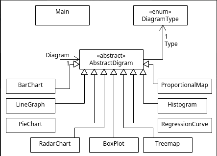
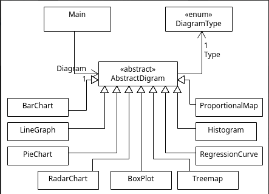

Visualisation de données (Python)
Application de visualisation permettant de produire des graphiques simples (bar charts, courbes, cartes proportionnelles…) à partir de données de tableaux.


 


Objectifs
- Réaliser une interface graphique.
- Proposer une structure claire et fonctionnelle en backEnd (Python - SQL)
Fonctionnalités
- Lecture de fichiers CSV
- Génération de graphiques (barres, courbes, comparatifs simples)
- Création de cartes proportionnelles pour représenter des valeurs par région ou catégorie
Compétences mobilisées
- Manipulation de données avec Python.
- Utilisation de Matplotlib et Pandas pour les graphiques.
- Structuration d’un projet
Technologies
Python, Git, MySQL, C#, IDE Visual Studio Code, Visual Studio